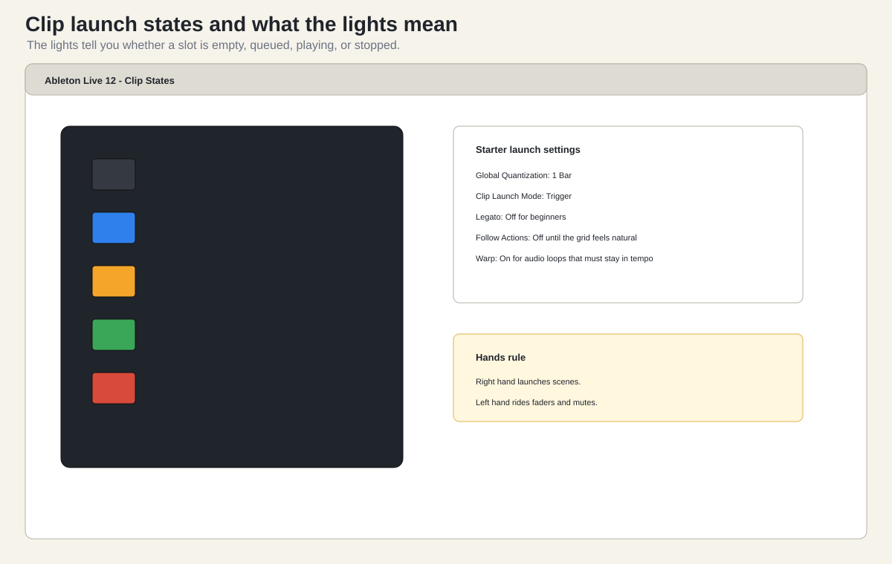

Watch first. Meta Mind Music walkthrough, the clip/session controls chapter: https://www.youtube.com/watch?v=hUo2xowjr0U. Use the chapter list under the video to jump to it.
The APC grid is eight columns by five rows.
The Akai manual says the current 8 by 5 matrix is represented in Live by a rectangle around the clips. That is the key. You are not looking at the whole Ableton set. You are looking at the part of the set currently under the APC.
To launch one clip:
If Global Quantization is set to 1 Bar, the clip will
usually wait until the next bar before it starts. This is good. It keeps
the performance in time.
If you press a clip and nothing happens:
To launch a whole musical section:
Scene launching is the APC’s superpower. A mouse can launch clips, but a mouse is awkward for launching a row and riding faders. The APC makes the song structure physical.
